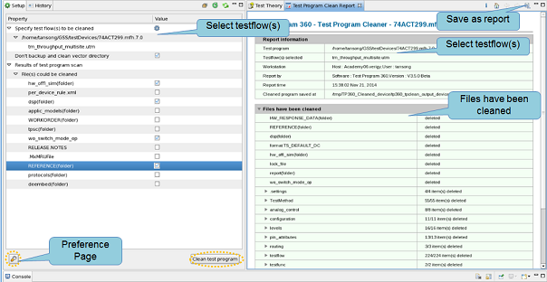

Using the Test Program Cleaner
Test Program Cleaner can find out and clean the redundant files and setups of your test program (device).
About this task
You can use the Test Program Cleaner when you are preparing to release test programs.
Before you begin
Make sure:
- You use the license "S&S_tools_package".
- If your test program is UTM based, make sure the source codes can be found by SmarTest.
Procedure
-
Click the
 icon to select the clean items. For details, check Preference page on Test Program Cleaner.
icon to select the clean items. For details, check Preference page on Test Program Cleaner.
Results
A cleaned device is generated in the directory /tmp/TP360_Cleaned_device or the directory you have specified in the preference page, and a report of this clean is shown in the right report area.

What to do next
After the cleaning process, you can load the cleaned device and compare the setup files before and after cleaning. For further information, see Programs after cleaning.
Functional changes
- Introduced in SmarTest 7.2.2